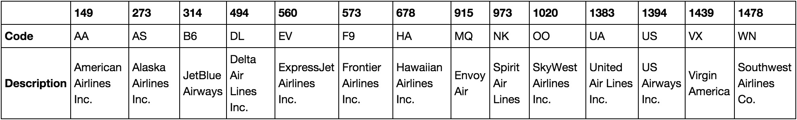

The Goal: Find an Airline to Fly With
This June I'll be graduating from Santa Clara University and transitioning into the workforce as a Big Data Analytics Consultant for Teradata. Consulting tends to involve a lot of travelling so it's often smart to select an airline to fly with in order to accumulate rewards points and status. A major consideration when choosing an airline is the number of non-stop flights an airline offers from the closest airport so, when a data science class I took at Santa Clara University tasked me with creating a data visualization blog post, I decided to create a visualization showing the routes flown by airlines in the United States by airport.
The Data: Bureau of Transportation Statistics' Airline On-Time Performance Data
The data for the visualization was taken from the Bureau of Transportation Statistics' (BTS) Airline On-Time Performance Data. BTS collects monthly data from all carriers making at least one-percent of the total scheduled domestic passenger revenue. Like most datasets, the airline data collected by BTS has its own quirks and needs to be processed before it can be useful.
Special Quirk: Regional Airlines

If you look at airline data from BTS, such as that displayed above, you'll see records of airlines you've probably never heard of. These are likely regional carriers. Interestingly enough, many major airlines sell flights from regional carriers under the major airline brand. To add to the confusion, regional airlines are sometimes contracted out with multiple airlines. For instance, the regional carrier ExpressJet carries out flights for American, United, and Delta. Fortunately, the folks over at fivethirtyeight figured out how to assign the regional flights (who you're actually flying with) to the major carriers (who you think you're flying with) based on the regional carrier and the flight number. These changes do a good job of adjusting the data so that it makes sense to we the consumers who only purchase tickets from the major airline. Even with these adjustments, it's quite possible that the visualization misses routes flown by small carriers on the behalf of a major airline since the Bureau only collects data from airlines making at least one-percent of the total scheduled domestic passenger revenue.
In addition to using the regional flights mentioned above, American Airlines is in the middle of a merger with US Airways. I chose to assign all of US Airways' flights to American Airlines since they have merged their rewards programs. Despite the merged rewards program, US Airways and American Airlines are still operating as separate airlines under a single rewards program. If you were more concerned with which airline to book a flight on rather than which airline to fly with long term, you would likely keep the US Airways and American Airlines flights separate.
Data Compression
The visualization I made uses the D3 JavaScript library to create a dynamic visualization. This visualization has to load and process the data every time it runs so we can get drastic performance increases by compressing the data down to the few components we actually care about. For this visualization, I only cared about the origin and destination airports (in the 50 United States), the airline, and the number of flights by airline for each route. I also needed lookup data for the location and names of each airport as well as the names of each airline. I found Python and IPython Notebook very useful for the cleaning and compression.
Building the Visualization
The most time consuming part of building the visualization was familiarizing myself with how D3 works. It's a remarkably simple and easy to use library that allows for a lot of sophisticated functionality. The visualization itself is composed of two different Scalable Vector Graphics (SVGs). One SVG contains the map showing routes per airline by origin airport while the second SVG contains a bar graph quantifying the flights per airline by origin airport. The map is created by drawing layers onto the SVG. The first layer consists of the map of the United States and is created using topojson. The flight paths are drawn on top of the country layer and the airports are drawn on top of the flight paths. The bar chart is simpler than the map and is simply composed of offset text and rectangles.
Logic has to be added to the basic elements once they've been created. For this visualization, we need the number of flights per airline per airport. D3 provides a csv function that allows us to conveniently load a csv file and execute a function on each its rows. Once we've loaded the required data, we simply need to attach the control elements (the radio buttons) to both the map and the bar chart. HTML 5 introduced a convenient method of storing data within an element tag using the convention data-foo where foo is a descriptive name for the data. Each of the bars in the bar chart and the routes on the map are given relevant data fields. The bars each have a data field corresponding to the airline each bar is associated with. The routes have data fields for both the airports they are associated with and the airlines they are associated with. Each route can have more than one airline associated with it. Adding the data to the path and bar elements means that anytime the selected airline is changed, it is easy to access the specific paths and bar associated with the airline and airport.
The Final Product
The visualization in this post was adapted from one of Mike Bostock's examples using the JavaScript library D3 and was influenced by fivethirtyeight's "Which Flight Will Get You There Fastest". If the visualization is a little too small, you can access an expanded version here.